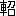

隴西の
李徴は博学
才穎、天宝の末年、若くして名を
虎榜に連ね、ついで
江南尉に補せられたが、性、
狷介、
自ら
恃むところ
頗る厚く、
賤吏に甘んずるを
潔しとしなかった。いくばくもなく官を退いた後は、
故山、
 略
略に
帰臥し、人と
交を絶って、ひたすら詩作に
耽った。下吏となって長く
膝を俗悪な大官の前に屈するよりは、詩家としての名を死後百年に
遺そうとしたのである。しかし、文名は容易に揚らず、生活は日を
逐うて苦しくなる。李徴は
漸く
焦躁に駆られて来た。この
頃からその
容貌も
峭刻となり、肉落ち骨
秀で、眼光のみ
徒らに
炯々として、
曾て進士に
登第した頃の
豊頬の美少年の
俤は、
何処に求めようもない。数年の後、貧窮に
堪えず、妻子の衣食のために
遂に節を屈して、再び東へ赴き、一地方官吏の職を奉ずることになった。一方、これは、
己の詩業に半ば絶望したためでもある。曾ての同輩は既に
遥か高位に進み、彼が昔、鈍物として
歯牙にもかけなかったその連中の下命を拝さねばならぬことが、往年の
儁才李徴の自尊心を
如何に
傷けたかは、想像に
難くない。彼は
怏々として楽しまず、
狂悖の性は
愈々抑え
難くなった。一年の後、公用で旅に出、
汝水のほとりに宿った時、遂に発狂した。
或夜半、急に顔色を変えて寝床から起上ると、何か訳の分らぬことを叫びつつそのまま下にとび下りて、
闇の中へ
駈出した。彼は二度と
戻って来なかった。附近の山野を捜索しても、何の手掛りもない。その後李徴がどうなったかを知る者は、
誰もなかった。
翌年、
監察御史、
陳郡の
袁
という者、勅命を奉じて
嶺南に
使し、
途に
商於の地に宿った。次の朝
未だ暗い
中に出発しようとしたところ、駅吏が言うことに、これから先の道に
人喰虎が出る
故、旅人は白昼でなければ、通れない。今はまだ朝が早いから、今少し待たれたが
宜しいでしょうと。袁
は、しかし、
供廻りの多勢なのを恃み、駅吏の言葉を
斥けて、出発した。残月の光をたよりに林中の草地を通って行った時、果して一匹の
猛虎が
叢の中から躍り出た。虎は、あわや袁
に躍りかかるかと見えたが、
忽ち身を
飜して、元の叢に隠れた。叢の中から人間の声で「あぶないところだった」と繰返し
呟くのが聞えた。その声に袁
は聞き
憶えがあった。
驚懼の中にも、彼は
咄嗟に思いあたって、叫んだ。「その声は、我が友、李徴子ではないか？」袁
は李徴と同年に進士の第に登り、友人の少かった李徴にとっては、最も親しい友であった。温和な袁
の性格が、
峻峭な李徴の性情と衝突しなかったためであろう。
叢の中からは、
暫く返辞が無かった。しのび泣きかと思われる
微かな声が時々
洩れるばかりである。ややあって、低い声が答えた。「如何にも自分は隴西の李徴である」と。
袁
は恐怖を忘れ、馬から下りて叢に近づき、
懐かしげに
久闊を叙した。そして、
何故叢から出て来ないのかと問うた。李徴の声が答えて言う。自分は今や異類の身となっている。どうして、おめおめと
故人の前にあさましい姿をさらせようか。かつ又、自分が姿を現せば、必ず君に
畏怖嫌厭の情を起させるに決っているからだ。しかし、今、図らずも故人に
遇うことを得て、
愧赧の念をも忘れる程に懐かしい。どうか、ほんの暫くでいいから、我が醜悪な今の外形を
厭わず、曾て君の友李徴であったこの自分と話を交してくれないだろうか。
後で考えれば不思議だったが、その時、袁
は、この超自然の怪異を、実に素直に
受容れて、少しも怪もうとしなかった。彼は部下に命じて行列の進行を
停め、自分は叢の
傍に立って、見えざる声と対談した。都の
噂、旧友の消息、袁
が現在の地位、それに対する李徴の祝辞。青年時代に親しかった者同志の、あの隔てのない語調で、それ
等が語られた後、袁
は、李徴がどうして今の身となるに至ったかを
訊ねた。草中の声は次のように語った。
今から一年程前、自分が旅に出て汝水のほとりに泊った夜のこと、一睡してから、ふと
眼を覚ますと、戸外で誰かが我が名を呼んでいる。声に応じて外へ出て見ると、声は闇の中から
頻りに自分を招く。覚えず、自分は声を追うて走り出した。無我夢中で駈けて行く中に、
何時しか途は山林に入り、しかも、知らぬ間に自分は左右の手で地を
攫んで走っていた。何か
身体中に力が
充ち満ちたような感じで、軽々と岩石を跳び越えて行った。気が付くと、手先や
肱のあたりに毛を生じているらしい。少し明るくなってから、谷川に臨んで姿を映して見ると、既に虎となっていた。自分は初め眼を信じなかった。次に、これは夢に違いないと考えた。夢の中で、これは夢だぞと知っているような夢を、自分はそれまでに見たことがあったから。どうしても夢でないと悟らねばならなかった時、自分は
茫然とした。そうして
懼れた。全く、どんな事でも起り得るのだと思うて、深く懼れた。しかし、何故こんな事になったのだろう。分らぬ。全く何事も我々には
判らぬ。理由も分らずに押付けられたものを大人しく受取って、理由も分らずに生きて行くのが、我々生きものの
さだめだ。自分は
直ぐに死を
想うた。しかし、その時、眼の前を一匹の
兎が駈け過ぎるのを見た途端に、自分の中の
人間は忽ち姿を消した。再び自分の中の
人間が目を覚ました時、自分の口は兎の血に
塗れ、あたりには兎の毛が散らばっていた。これが虎としての最初の経験であった。それ以来今までにどんな所行をし続けて来たか、それは到底語るに忍びない。ただ、一日の中に必ず数時間は、人間の心が
還って来る。そういう時には、曾ての日と同じく、人語も
操れれば、複雑な思考にも堪え得るし、
経書の章句を
誦んずることも出来る。その人間の心で、虎としての
己の
残虐な
行のあとを見、己の運命をふりかえる時が、最も情なく、恐しく、
憤ろしい。しかし、その、人間にかえる数時間も、日を経るに従って次第に短くなって行く。今までは、どうして虎などになったかと怪しんでいたのに、この間ひょいと気が付いて見たら、
己はどうして以前、人間だったのかと考えていた。これは恐しいことだ。今少し
経てば、
己の中の人間の心は、獣としての習慣の中にすっかり
埋れて消えて
了うだろう。ちょうど、古い宮殿の
礎が次第に土砂に埋没するように。そうすれば、しまいに己は自分の過去を忘れ果て、一匹の虎として狂い廻り、今日のように途で君と出会っても
故人と認めることなく、君を裂き
喰うて何の悔も感じないだろう。一体、獣でも人間でも、もとは何か
他のものだったんだろう。初めはそれを憶えているが、次第に忘れて了い、初めから今の形のものだったと思い込んでいるのではないか？ いや、そんな事はどうでもいい。己の中の人間の心がすっかり消えて了えば、恐らく、その方が、己は
しあわせになれるだろう。だのに、己の中の人間は、その事を、この上なく恐しく感じているのだ。ああ、全く、どんなに、恐しく、
哀しく、切なく思っているだろう！ 己が人間だった記憶のなくなることを。この気持は誰にも分らない。誰にも分らない。己と同じ身の上に成った者でなければ。ところで、そうだ。己がすっかり人間でなくなって了う前に、一つ頼んで置きたいことがある。
袁
はじめ一行は、息をのんで、
叢中の声の語る不思議に聞入っていた。声は続けて言う。
他でもない。自分は元来詩人として名を成す積りでいた。しかも、業
未だ成らざるに、この運命に立至った。曾て作るところの詩数百
篇、
固より、まだ世に行われておらぬ。遺稿の所在も
最早判らなくなっていよう。ところで、その中、今も
尚記誦せるものが数十ある。これを我が
為に伝録して
戴きたいのだ。何も、これに
仍って一人前の詩人
面をしたいのではない。作の巧拙は知らず、とにかく、産を破り心を狂わせてまで自分が
生涯それに執着したところのものを、一部なりとも後代に伝えないでは、死んでも死に切れないのだ。
袁
は部下に命じ、筆を執って叢中の声に
随って書きとらせた。李徴の声は叢の中から朗々と響いた。長短
凡そ三十篇、格調高雅、意趣卓逸、一読して作者の才の非凡を思わせるものばかりである。しかし、袁
は感嘆しながらも
漠然と次のように感じていた。
成程、作者の素質が第一流に属するものであることは疑いない。しかし、このままでは、第一流の作品となるのには、
何処か（非常に微妙な点に
於て）欠けるところがあるのではないか、と。
旧詩を吐き終った李徴の声は、突然調子を変え、自らを
嘲るか
如くに言った。
羞しいことだが、今でも、こんな
あさましい身と成り果てた今でも、
己は、己の詩集が
長安風流人士の机の上に置かれている様を、夢に見ることがあるのだ。
岩窟の中に横たわって見る夢にだよ。
嗤ってくれ。詩人に成りそこなって虎になった哀れな男を。（袁
は昔の青年李徴の
自嘲癖を思出しながら、哀しく聞いていた。）そうだ。お笑い草ついでに、今の
懐を即席の詩に述べて見ようか。この虎の中に、まだ、曾ての李徴が生きている
しるしに。
袁
は又下吏に命じてこれを書きとらせた。その詩に言う。
偶因狂疾成殊類 災患相仍不可逃
今日爪牙誰敢敵 当時声跡共相高
我為異物蓬茅下 君已乗気勢豪
此夕渓山対明月 不成長嘯但成

時に、残月、光
冷やかに、白露は地に
滋く、樹間を渡る冷風は既に暁の近きを告げていた。人々は最早、事の奇異を忘れ、粛然として、この詩人の
薄倖を嘆じた。李徴の声は再び続ける。
何故こんな運命になったか判らぬと、先刻は言ったが、しかし、考えように
依れば、思い当ることが全然ないでもない。人間であった時、
己は努めて人との
交を避けた。人々は己を
倨傲だ、尊大だといった。実は、それが
殆ど
羞恥心に近いものであることを、人々は知らなかった。
勿論、曾ての
郷党の鬼才といわれた自分に、自尊心が無かったとは
云わない。しかし、それは
臆病な自尊心とでもいうべきものであった。己は詩によって名を成そうと思いながら、進んで師に就いたり、求めて詩友と交って
切磋琢磨に努めたりすることをしなかった。かといって、又、己は俗物の間に
伍することも
潔しとしなかった。共に、我が臆病な自尊心と、尊大な羞恥心との
所為である。
己の
珠に
非ざることを
惧れるが
故に、
敢て刻苦して
磨こうともせず、又、己の珠なるべきを半ば信ずるが故に、
碌々として
瓦に伍することも出来なかった。
己は次第に世と離れ、人と遠ざかり、
憤悶と
慙恚とによって
益々己の内なる臆病な自尊心を飼い
ふとらせる結果になった。人間は誰でも猛獣使であり、その猛獣に当るのが、各人の性情だという。
己の場合、この尊大な羞恥心が猛獣だった。虎だったのだ。これが己を損い、妻子を苦しめ、友人を傷つけ、果ては、己の外形をかくの如く、内心にふさわしいものに変えて了ったのだ。今思えば、全く、己は、己の
有っていた
僅かばかりの才能を空費して了った訳だ。人生は何事をも
為さぬには余りに長いが、何事かを為すには余りに短いなどと口先ばかりの警句を
弄しながら、事実は、才能の不足を
暴露するかも知れないとの
卑怯な
危惧と、刻苦を
厭う怠惰とが己の
凡てだったのだ。己よりも遥かに乏しい才能でありながら、それを専一に磨いたがために、堂々たる詩家となった者が幾らでもいるのだ。虎と成り果てた今、己は
漸くそれに気が付いた。それを思うと、己は今も胸を
灼かれるような悔を感じる。己には最早人間としての生活は出来ない。たとえ、今、己が頭の中で、どんな優れた詩を作ったにしたところで、どういう手段で発表できよう。まして、己の頭は
日毎に虎に近づいて行く。どうすればいいのだ。己の空費された過去は？ 己は
堪らなくなる。そういう時、己は、向うの山の頂の
巖に上り、
空谷に向って
吼える。この胸を灼く悲しみを誰かに訴えたいのだ。己は昨夕も、
彼処で月に向って
咆えた。誰かにこの苦しみが分って
貰えないかと。しかし、獣どもは己の声を聞いて、
唯、
懼れ、ひれ伏すばかり。山も
樹も月も露も、一匹の虎が怒り狂って、
哮っているとしか考えない。天に躍り地に伏して嘆いても、誰一人己の気持を分ってくれる者はない。ちょうど、人間だった頃、己の傷つき
易い内心を誰も理解してくれなかったように。己の毛皮の
濡れたのは、夜露のためばかりではない。
漸く
四辺の暗さが薄らいで来た。木の間を伝って、
何処からか、
暁角が哀しげに響き始めた。
最早、別れを告げねばならぬ。酔わねばならぬ時が、（虎に還らねばならぬ時が）近づいたから、と、李徴の声が言った。だが、お別れする前にもう一つ頼みがある。それは我が妻子のことだ。
彼等は
未だ
略にいる。固より、己の運命に就いては知る
筈がない。君が南から帰ったら、己は既に死んだと彼等に告げて貰えないだろうか。決して今日のことだけは明かさないで欲しい。厚かましいお願だが、彼等の孤弱を
憐れんで、今後とも
道塗に
飢凍することのないように計らって戴けるならば、自分にとって、
恩倖、これに過ぎたるは
莫い。
言終って、叢中から
慟哭の声が聞えた。袁もまた涙を
泛べ、
欣んで李徴の意に
副いたい
旨を答えた。李徴の声はしかし
忽ち又先刻の自嘲的な調子に
戻って、言った。
本当は、
先ず、この事の方を先にお願いすべきだったのだ、己が人間だったなら。飢え凍えようとする妻子のことよりも、
己の乏しい詩業の方を気にかけているような男だから、こんな獣に身を
堕すのだ。
そうして、
附加えて言うことに、袁
が嶺南からの帰途には決してこの
途を通らないで欲しい、その時には自分が酔っていて
故人を認めずに襲いかかるかも知れないから。又、今別れてから、前方百歩の所にある、あの丘に上ったら、
此方を振りかえって見て貰いたい。自分は今の姿をもう一度お目に掛けよう。勇に誇ろうとしてではない。我が醜悪な姿を示して、
以て、再び
此処を過ぎて自分に会おうとの気持を君に起させない為であると。
袁
は叢に向って、
懇ろに別れの言葉を述べ、馬に上った。叢の中からは、又、
堪え得ざるが如き
悲泣の声が
洩れた。袁
も幾度か叢を振返りながら、涙の中に出発した。
一行が丘の上についた時、彼等は、言われた通りに振返って、先程の林間の草地を
眺めた。忽ち、一匹の虎が草の茂みから道の上に躍り出たのを彼等は見た。虎は、既に白く光を失った月を仰いで、二声三声
咆哮したかと思うと、又、元の叢に躍り入って、再びその姿を見なかった。